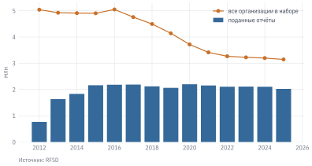
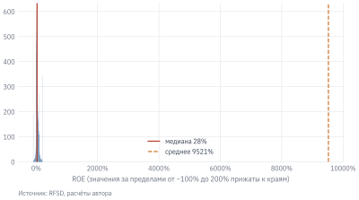

Выручка ПАО «Магнит» (ИНН 2309085638) по бухгалтерской отчётности за 2023 г. – 0,56 млрд руб. Не триллионы, как можно было бы ожидать от одной из крупнейших розничных сетей страны, а меньше миллиарда. При этом чистая прибыль той же компании – 98,3 млрд руб., в сотню с лишним раз больше выручки. Ошибка в данных? Нет. ПАО «Магнит» – холдинговая компания: магазины сети принадлежат его дочерней компании АО «Тандер» (ИНН 2310031475), выручка которой за тот же год составила 2,31 трлн руб. Прибыль холдинга почти целиком состоит из дивидендов дочерних компаний: 97,6 млрд руб. доходов от участия в других организациях.
Этот пример показывает главное, что нужно знать о бухгалтерской отчётности российских компаний: она описывает отдельное юридическое лицо, а не группу компаний. Чтобы проанализировать бизнес, нужно понимать, какое юрлицо его ведёт, как устроены формы отчётности и какие ловушки в них встречаются. Зато в обмен на эту сложность мы получаем уникальный источник: отчётность всех российских организаций – 2,1 млн отчётов только за 2023 г. Открытые данные такого охвата о частных, а не только о публичных компаниях есть лишь в немногих странах.
УведомлениеВ этой главе
Узнаём, откуда берётся отчётность российских компаний и что такое набор данных RFSD.
Разбираемся в формах отчётности: баланс, отчёт о финансовых результатах, отчёт о движении денежных средств.
Учимся работать с большими таблицами в Polars: ленивые вычисления, фильтры, группировки.
Отбираем компании отрасли по классификатору ОКВЭД.
Проверяем качество отчётности и считаем финансовые коэффициенты.
Данные:rfsd_sample.parquet (выборка отчётности), rfsd_summary.parquet, rfsd_cases.parquet, okved.csv, rfsd_lines.csv. Нужно знать: основы бухгалтерского учёта (что такое активы, обязательства, выручка, прибыль), работа с pandas.
5.1 Откуда берётся отчётность
Российские организации обязаны ежегодно сдавать бухгалтерскую отчётность в налоговую службу. Исключения – банки и некоторые другие финансовые организации (они отчитываются перед Банком России), а также организации государственного сектора. Отчётность составляется по российским стандартам бухгалтерского учёта (РСБУ) на стандартных формах, где у каждой строки есть свой код. С 2019 г. эта отчётность собирается в государственном информационном ресурсе бухгалтерской отчётности (ГИР БО) и открыто публикуется на сайте ФНС.
Скачать с сайта ФНС отчётность одной компании просто, а отчётность трёх миллионов компаний за полтора десятилетия – очень трудоёмко: данные нужно собрать, разобрать, привести к единому виду и очистить от ошибок. Есть коммерческие компании, которые продают такие наборы данных, но они стоят дорого и не всегда прозрачны. Также такие провайдеры (к примеру, СПАРК Интерфакс или ФИРА) не дают возможности работать с данными напрямую в Python или R, а только через их интерфейсы.
Эту работу проделали исследователи Европейского университета в Санкт-Петербурге и опубликовали результат как открытый набор данных RFSD (Russian Financial Statements Database) (Bondarkov и др. 2025 г.). Набор распространяется по лицензии CC BY 4.0 и доступен на платформе Hugging Face.
Код
s = summary[summary["year"] >=2012]fig, ax = plt.subplots()ax.bar(s["year"], s["filed"] /1e6, color="#34699A", label="поданные отчёты")ax.plot(s["year"], s["firms"] /1e6, color="#C8702A", marker="o", label="все организации в наборе")ax.set_ylabel("млн")ax.legend(loc="upper right")plot.source(ax, "RFSD")plt.show()

Рисунок 5.1: Число отчётов в RFSD по годам
В 2023 г. в наборе 3,2 млн организаций, из них отчётность подали 2,1 млн, а положительную выручку показали только 1,5 млн. Остальные – компании, освобождённые от сдачи отчётности, «спящие» юрлица без деятельности, фирмы в процессе ликвидации. Для анализа почти всегда нужны только поданные отчёты – в данных они отмечены флагом filed = 1.
Полный набор RFSD занимает около 8 ГБ: один год – это таблица примерно из 3 млн строк и более чем 200 столбцов. Для примеров этой главы мы используем выборку: компании пяти отраслей, выручка которых хотя бы в одном году 2018–2024 гг. превышала 1 млрд руб. Обратите внимание на «хотя бы в одном году»: так в выборку попадают и компании, которые потом сократились или ушли с рынка, и мы избегаем ошибки выжившего (глава «Подготовка данных»).
Бухгалтерская отчётность состоит из нескольких форм. Для анализа важны три.
Бухгалтерский баланс – снимок на конец года: что у компании есть (активы) и за счёт чего это финансируется (пассивы: капитал и обязательства). Активы всегда равны пассивам. Отчёт о финансовых результатах показывает, как из выручки через вычет расходов получается чистая прибыль. Отчёт о движении денежных средств показывает реальные поступления и платежи денег, разделённые на три вида деятельности: текущую (операционную), инвестиционную и финансовую.
В RFSD каждая строка формы – отдельный столбец с кодом строки: line_1600 – итог баланса, line_2110 – выручка. Основные строки:
Таблица 5.1: Основные строки бухгалтерской отчётности
Код
Строка
Форма
1100 / 1200
Внеоборотные / оборотные активы
баланс
1250
Денежные средства и эквиваленты
баланс
1600
Итого активы (баланс)
баланс
1300
Капитал и резервы
баланс
1400 / 1500
Долгосрочные / краткосрочные обязательства
баланс
1410 / 1510
Заёмные средства (долгосрочные / краткосрочные)
баланс
2110
Выручка
финансовые результаты
2120
Себестоимость продаж
финансовые результаты
2200
Прибыль от продаж
финансовые результаты
2330
Проценты к уплате
финансовые результаты
2300
Прибыль до налогообложения
финансовые результаты
2400
Чистая прибыль
финансовые результаты
4100
Сальдо денежных потоков от текущих операций
движение денежных средств
4500
Остаток денежных средств на конец периода
движение денежных средств
Полный справочник строк с названиями – в файле rfsd_lines.csv:
Код
lines = data.load_rfsd_lines()lines[lines["code"].isin(["line_2110", "line_2120", "line_2330", "line_2400"])][["code", "name_ru", "sign"]]#> code name_ru sign#> 40 line_2110 Выручка положительная#> 41 line_2120 Себестоимость продаж в скобках (отрицательная)#> 48 line_2330 Проценты к уплате в скобках (отрицательная)#> 60 line_2400 Чистая прибыль (убыток) любой знак
Два соглашения нужно запомнить сразу.
Единицы измерения – тысячи рублей. Выручка «Магнита» из введения записана в данных как 558 670 – это 558 670 тыс. руб., или 0,56 млрд руб.
Расходы хранятся со знаком минус. В бумажных формах некоторые строки пишутся в скобках: себестоимость, коммерческие расходы, проценты к уплате. В RFSD такие строки хранятся отрицательными числами. Поэтому валовая прибыль – это line_2110 + line_2120, а не разность.
ПредупреждениеТипичная ошибка
Использовать формулы, написанные для другой версии данных. В ранних версиях RFSD знаки строк «в скобках» были непоследовательны; после их исправления изменилась, в частности, чистая прибыль у 6–25% отчётов (в зависимости от года). Код, в котором прибыль до вычета процентов считается как line_2300 + line_2330, давал правильный ответ на старых данных и неправильный – на новых: теперь проценты отрицательны, и EBIT равен line_2300 − line_2330. Всегда проверяйте, какую версию данных вы используете, и знаки ключевых строк.
5.3 Большие таблицы: Polars
С таблицей в сотню тысяч строк pandas справляется легко. С таблицей в 3 млн строк и 200 столбцов – уже с трудом: pandas читает всё в память и выполняет каждую операцию по очереди. Для больших данных удобнее библиотека Polars. Она быстрее за счёт параллельных вычислений, но главное её преимущество – ленивые вычисления.
В ленивом режиме Polars не выполняет операции сразу, а строит план запроса. Когда результат действительно нужен (метод collect()), библиотека оптимизирует план: читает из файла только нужные столбцы, применяет фильтры прямо при чтении и не создаёт промежуточных таблиц. Посмотрим на примере: крупнейшие розничные компании в 2023 г.
Обратите внимание на nulls_last=True: по умолчанию Polars при сортировке по убыванию ставит пропуски в начало, и без этого параметра «крупнейшими» оказались бы компании, не раскрывшие выручку.
До вызова collect() в переменной top_retail лежит не таблица, а описание запроса. Его можно посмотреть методом top_retail.explain(): в плане видно, что фильтр по году и коду выполняется при чтении файла, а из почти полусотни столбцов читаются только нужные для запроса.
Синтаксис Polars построен на выражениях: pl.col("line_2110") / 1e6 – это не вычисление, а описание того, что нужно сделать со столбцом. Выражения передаются в методы filter (отбор строк), select (отбор и вычисление столбцов), with_columns (добавление столбцов), group_by(...).agg(...) (группировка). Та же задача в pandas выглядела бы так:
Код
df23 = rfsd[(rfsd["year"] ==2023) & (rfsd["filed"] ==1) & rfsd["okved"].str.startswith("47")]df23.nlargest(5, "line_2110")[["name", "inn", "okved", "line_2110", "line_2400"]]#> name inn ... line_2110 line_2400#> 62353 ООО "АГРОТОРГ" 7825706086 ... 2.363463e+09 35409084.0#> 8114 АО "ТАНДЕР" 2310031475 ... 2.314387e+09 64868767.0#> 53503 АО "ТОРГОВЫЙ ДОМ "ПЕРЕКРЕСТОК" 7728029110 ... 8.186678e+08 13156871.0#> 12116 ООО "ДНС РИТЕЙЛ" 2540167061 ... 7.268227e+08 43627651.0#> 50208 ООО "ВАЙЛДБЕРРИЗ" 7721546864 ... 5.387316e+08 19685072.0#> #> [5 rows x 5 columns]
На небольшой выборке разницы в скорости не заметно. Но полный RFSD в pandas пришлось бы целиком загрузить в память, а Polars может читать его прямо с сервера, скачивая только нужные столбцы. Так выглядит запрос к полному набору за 2023 г. на Hugging Face (при сборке книги он не выполняется: файл за один год весит около 550 МБ):
Этим способом вы будете работать с полными данными в проекте по анализу отрасли.
5.4 Классификатор ОКВЭД
Чтобы сравнивать компании, их нужно разделить на отрасли. В России для этого используется ОКВЭД 2 – общероссийский классификатор видов экономической деятельности. Он иерархический: раздел (буква), класс (две цифры), подкласс, группа, подгруппа, вид.
Код
okv = data.load_okved()okv[okv["code"].isin(["47", "47.1", "47.11", "47.19"])][["code", "section", "name"]]#> code section name#> 1756 47 G Торговля розничная, кроме торговли автотранспо...#> 1757 47.1 G Торговля розничная в неспециализированных мага...#> 1758 47.11 G Торговля розничная преимущественно пищевыми пр...#> 1762 47.19 G Торговля розничная прочая в неспециализированн...
Код 47 – класс «Торговля розничная», 47.11 – розничная торговля преимущественно продуктами в неспециализированных магазинах (так классифицируются продуктовые сети). У каждой компании в RFSD указан основной код ОКВЭД. Это важно учитывать: многие компании занимаются несколькими видами деятельности, а основной код иногда меняется.
В нашей выборке у 4,3% компаний основной код ОКВЭД менялся за 2018–2024 гг. Поэтому, отбирая компании отрасли, нужно решить, по какому году брать код, и описать это правило в работе.
СоветСначала предскажите
В каком из пяти классов нашей выборки – производство пищевых продуктов (10), строительство зданий (41), розничная торговля (47), сухопутный транспорт (49), разработка программного обеспечения (62) – медианная рентабельность продаж выше всего? А где ниже всего? Запишите ответ, прежде чем читать дальше.
5.5 Качество данных
Отчётность составляют сами компании, и ошибок в ней немало. Авторы RFSD проверили данные и пометили проблемные наблюдения флагами:
filed – отчёт действительно подан (а не восстановлен);
imputed – значения восстановлены по отчёту следующего года;
outlier – подозрительный отчёт, помеченный авторами набора после ручной проверки;
simplified – упрощённая форма отчётности малого предприятия: в ней меньше строк.
5.5.1 Сходится ли баланс
Самая простая проверка – равенство активов и пассивов: line_1600 = line_1700. Нарушить его в правильно составленной отчётности невозможно.
В полном наборе за 2023 г. баланс не сходится лишь в 0,13% отчётов – авторы RFSD исправили большинство ошибок. Но другая особенность встречается очень часто: у 17% поданных отчётов капитал неположительный – обязательства компании больше её активов. Для крупного бизнеса это редкость, а среди мелких компаний такие «фирмы с отрицательным капиталом» – обычное дело. Коэффициенты, в знаменателе которых стоит капитал (ROE, долг/капитал), для таких компаний теряют смысл, и их нужно исключать или рассматривать отдельно.
5.5.2 Скрытая отчётность
С 2022 г. часть компаний вправе не раскрывать отчётность публично. В данных у них пустые строки, а флаг filed равен нулю.
Код
ozon = cases[cases["inn"] =="7704217370"][["inn", "year", "filed", "line_2110", "line_2400"]]ozon[ozon["year"] >=2019]#> inn year filed line_2110 line_2400#> 38 7704217370 2019 0.0 NaN NaN#> 39 7704217370 2020 0.0 NaN NaN#> 40 7704217370 2021 0.0 177823485.0 0.0#> 41 7704217370 2022 1.0 261369829.0 -48695018.0#> 42 7704217370 2023 0.0 NaN NaN#> 43 7704217370 2024 0.0 NaN NaN#> 44 7704217370 2025 0.0 NaN NaN
ООО «Интернет Решения» (ИНН 7704217370) – основная операционная компания Ozon – за 2022 г. отчётность раскрыла, а за следующие годы – уже нет. Для отраслевого анализа это означает смещение: из данных выпадают прежде всего крупные компании, в том числе под санкциями. Выводы о «всей отрасли» по таким данным нужно делать осторожно.
5.5.3 Отчётность юрлица, а не группы
Пример «Магнита» из начала главы – не исключение. Крупные группы компаний обычно состоят из десятков юрлиц: холдинга, операционных компаний, финансовых и управляющих компаний. Отчётность по РСБУ каждого из них – это часть картины. Отчётность группы в целом (консолидированная, по МСФО) в RFSD не входит. Поэтому, анализируя крупную компанию, сначала выясните, какое юрлицо ведёт основной бизнес.
Важное уведомлениеОсобенность данных: новые формы с 2025 г.
С отчётности за 2025 г. в России действуют новые формы. Коды части строк изменились: например, в упрощённой форме дебиторская задолженность отражается по строке 1240 вместо 1230. RFSD сохраняет коды в том виде, в каком они были в формах соответствующего года, поэтому при анализе рядов, включающих 2025 г., нужно сверять коды. В нашей выборке 2025 г. нет.
5.6 Финансовые коэффициенты
Абсолютные показатели компаний разного размера сравнивать бессмысленно: выручка «Тандера» в тысячи раз больше выручки небольшой сети. Поэтому анализ отчётности строится на финансовых коэффициентах – отношениях показателей друг к другу.
Таблица 5.2: Основные финансовые коэффициенты
Коэффициент
Формула в RFSD
Что показывает
Рентабельность продаж (ROS)
line_2400 / line_2110
сколько чистой прибыли приносит рубль выручки
Рентабельность активов (ROA)
line_2400 / line_1600
сколько прибыли приносит рубль активов
Рентабельность капитала (ROE)
line_2400 / line_1300
сколько прибыли приносит рубль капитала собственников
Оборачиваемость активов
line_2110 / line_1600
сколько выручки приносит рубль активов
Текущая ликвидность
line_1200 / line_1500
хватает ли оборотных активов на краткосрочные обязательства
Долг / капитал
(line_1410 + line_1510) / line_1300
долговая нагрузка
Покрытие процентов
(line_2300 − line_2330) / (−line_2330)
во сколько раз операционная прибыль превышает проценты
Медианная рентабельность продаж выше всего в классе 62 (разработка программного обеспечения) – 7,4%, ниже всего в классе 41 (строительство зданий) – 1,2%. Разница объясняется бизнес-моделью: разработчику программ почти не нужны материальные активы и закупки, а строитель и розничная сеть работают с большими объёмами при небольшой наценке. Зато у розницы высокая оборачиваемость активов: магазин быстро продаёт товар и снова закупает его. Эту связь маржи и оборачиваемости мы разберём в следующей главе с помощью разложения DuPont.
5.6.1 Чего нет в отчётности: амортизация и EBITDA
В аналитике и в новостях о компаниях постоянно встречается показатель EBITDA – прибыль до вычета процентов, налогов и амортизации (Earnings Before Interest, Taxes, Depreciation and Amortization). На нём основаны самые популярные мерки долговой нагрузки: отношение чистого долга к EBITDA, ковенанты в кредитных договорах, мультипликатор EV/EBITDA. Естественно захотеть посчитать EBITDA по данным RFSD. Сделать это корректно нельзя.
Причина в устройстве российской отчётности. EBITDA = EBIT + амортизация. EBIT мы посчитали выше, а вот амортизации нет ни в одной из строк RFSD:
в отчёте о финансовых результатах (форма 2) расходы сгруппированы по функциям – себестоимость, коммерческие, управленческие, – и амортизация «растворена» в них;
отчёт о движении денежных средств (форма 4) по РСБУ составляется прямым методом: в нём показаны реальные поступления и платежи, а не корректировка прибыли на неденежные расходы, как в косвенном методе МСФО. Поэтому амортизации нет и там;
амортизация раскрывается в пояснениях к отчётности (строка 5640 «Амортизация» в разделе о затратах на производство), но пояснения в RFSD не входят, а многие компании, сдающие упрощённую отчётность, их не составляют вовсе.
Иногда амортизацию просто пропускают и называют EBITDA то, что на самом деле является EBIT. Для разработчика программ, у которого основные средства составляют в среднем (по медиане) 3% активов, ошибка будет небольшой. Для транспортной компании, у которой на основные средства приходится 41% активов, амортизация – одна из крупнейших статей затрат, и «EBITDA», посчитанная без неё, окажется сильно заниженной. Отношение долга к такой «EBITDA» будет завышено, и компания будет выглядеть более закредитованной, чем при расчёте по её опубликованной отчётности. Хуже того, ошибка разная для разных отраслей, поэтому искажаются и сравнения между ними.
Что делать на практике:
по данным RFSD использовать показатели, которые считаются честно: EBIT, прибыль от продаж (line_2200), чистую прибыль – и называть их своими именами;
если нужна долговая нагрузка, считать долг к EBIT и помнить, что пороги, привычные для долга к EBITDA (например, «больше 3–4 – высокая нагрузка»), к нему не применимы: при той же компании отношение к EBIT всегда выше;
для публичных компаний брать EBITDA из консолидированной отчётности по МСФО или раскрытий эмитента и указывать источник.
ПредупреждениеТипичная ошибка
Назвать EBITDA показатель без амортизации. В прошлые годы в учебных ноутбуках этого курса EBITDA по RFSD считалась «упрощённо, как EBIT». Название обещает читателю одно, а число означает другое. Если нужного показателя в данных нет, так и напишите и используйте ближайший корректный показатель с его настоящим названием.
5.6.2 Почему медиана, а не среднее
Распределения финансовых коэффициентов очень неравномерны. Посмотрим на ROE:
Код
roe = d["roe"].dropna()fig, ax = plt.subplots()ax.hist(roe.clip(-1, 2), bins=80, color="#34699A")ax.axvline(roe.median(), color="#B8412E", lw=1.2, label=f"медиана {roe.median():.0%}")ax.axvline(roe.mean(), color="#C8702A", lw=1.2, ls="--", label=f"среднее {roe.mean():.0%}")ax.set_xlabel("ROE (значения за пределами от −100% до 200% прижаты к краям)")ax.xaxis.set_major_formatter(plt.FuncFormatter(lambda x, _: f"{x:.0%}"))ax.legend()plot.source(ax, "RFSD, расчёты автора", offset=32)plt.show()

Рисунок 5.2: Распределение рентабельности капитала (ROE) компаний выборки в 2023 г.
Один процент компаний с самой низкой ROE имеет рентабельность ниже −280%, один процент с самой высокой – выше 1 619%. Такие значения возникают, когда капитал компании очень мал: небольшая прибыль, делённая на почти нулевой капитал, даёт тысячи процентов. Среднее значение по отрасли оказывается во власти этих крайних случаев, а медиана и квантили – устойчивы. Поэтому для отраслевых сравнений используют медиану и межквартильный размах, а крайние значения либо исключают, либо «прижимают» к заданным квантилям (винсоризация).
5.7 Связь форм отчётности
Формы отчётности связаны между собой, и эти связи – ещё одна проверка данных и источник содержательных выводов.
Деньги в двух формах. Остаток денежных средств на конец года в отчёте о движении денежных средств (line_4500) должен совпадать с денежными средствами в балансе (line_1250).
Код
both = d[d["line_4500"].notna() & d["line_1250"].notna()]match = (both["line_4500"] - both["line_1250"]).abs() <=5# допуск на округлениеmatch.mean()#> 0.8791487205472511
Совпадение – в 88% отчётов. Остальные расхождения – это ошибки при заполнении форм или разные подходы к тому, что считать денежными эквивалентами. Прежде чем строить выводы на денежных потоках, стоит проверить, к каким компаниям относятся расхождения.
Прибыль и деньги. Чистая прибыль – это не деньги. Прибыль отражает доходы и расходы в момент их признания, а денежный поток – в момент оплаты. Компания может показывать прибыль, но не получать денег: например, если покупатели платят с большой отсрочкой или деньги оседают в запасах.
Код
flows = d.groupby("div").apply(lambda g: pd.Series({"доля с прибылью": (g["line_2400"] >0).mean(),"доля с положительным CFO": (g["line_4100"] >0).mean(),}), include_groups=False).round(2)flows#> доля с прибылью доля с положительным CFO#> div #> 10 0.88 0.60#> 41 0.80 0.37#> 47 0.80 0.53#> 49 0.86 0.51#> 62 0.85 0.58
Разница особенно велика в строительстве: прибыль показывают 80% компаний, а положительный денежный поток от текущих операций – только 37%. Застройщик годами вкладывает деньги в строительство, а выручку и прибыль признаёт при сдаче объекта. Кроме того, с 2019 г. деньги покупателей жилья поступают не застройщику, а на эскроу-счета в банке и раскрываются только после ввода дома. Сравнение прибыли с денежным потоком – один из главных инструментов проверки «качества прибыли», к нему мы вернёмся при анализе кредитного риска.
Итоги
Бухгалтерская отчётность (РСБУ) всех российских организаций публикуется ФНС; набор RFSD собирает и очищает её с 2011 г. – около 2 млн отчётов в год.
Отчётность описывает отдельное юрлицо, а не группу: выручка холдинга может быть в тысячи раз меньше выручки операционной компании.
В RFSD строки форм – это столбцы с кодами; единицы – тысячи рублей; расходы («строки в скобках») хранятся отрицательными. Формулы зависят от версии данных.
Для больших таблиц удобен Polars: ленивые вычисления читают только нужные столбцы и строки, в том числе прямо с сервера.
Компании отрасли отбираются по основному коду ОКВЭД; правило отбора нужно явно описать.
Качество данных: проверка баланса, флаги RFSD, отрицательный капитал, скрытая отчётность, новые формы с 2025 г.
Распределения коэффициентов имеют тяжёлые хвосты – для сравнений используют медианы и квантили.
Формы отчётности связаны: сверка денег в балансе и отчёте о движении денежных средств, сравнение прибыли и денежного потока.
5.8 Упражнения
5.8.1 А. Понимание
Почему у холдинговой компании чистая прибыль может быть больше выручки? В какой строке отчёта о финансовых результатах это видно?
В RFSD line_2110 = 500 000, line_2120 = −380 000. Чему равна валовая прибыль в рублях? Что было бы, если бы вы посчитали её как line_2110 − line_2120?
У компании капитал 1 млн руб., чистая прибыль 3 млн руб. Чему равна ROE? Что эта цифра говорит о компании, а что – нет?
Почему для сравнения рентабельности компаний отрасли используют медиану, а не среднее?
5.8.2 Б. Практика на своей отрасли
Загрузите из полного RFSD (Hugging Face) отчётность компаний своей отрасли (код ОКВЭД назначает преподаватель) за 2023 г. Сколько компаний подали отчётность? Сколько из них с выручкой больше 100 млн руб.?
Для своей отрасли проверьте: у какой доли компаний не сходится баланс, отрицательный капитал, скрытая отчётность (компании, которые отчитывались в 2021 г., но не в 2023 г.)?
Посчитайте медианы и квартили коэффициентов из таблицы 5.2 для своей отрасли. Сравните с классами выборки книги.
5.8.3 В. Работа с ИИ-ассистентом
Попросите ИИ-ассистента написать функцию расчёта EBIT и коэффициента покрытия процентов по данным RFSD. Проверьте на отчётности «Тандера» из data.load_rfsd_cases(): учёл ли ассистент, что проценты к уплате в RFSD отрицательны? Какой результат получился бы без учёта знака?
Спросите ассистента, какова выручка «Магнита» за 2023 г. Сравните ответ с данными RFSD по ПАО «Магнит» и АО «Тандер». Какую отчётность – РСБУ или МСФО, какого юрлица – подразумевал ассистент?
5.8.4 Г. Мини-исследование
Какая доля компаний вашей отрасли, отчитывавшихся в 2021 г., перестала раскрывать отчётность к 2023 г.? Отличаются ли они (по выручке и рентабельности 2021 г.) от тех, кто продолжил отчитываться? Какие выводы об отрасли по данным 2023 г. из-за этого могут быть смещены? Подготовьте короткий устный рассказ.
Вопросы для самопроверки
Чем отчётность по РСБУ отличается от консолидированной отчётности группы по МСФО?
В каких единицах записаны денежные показатели в RFSD и с каким знаком хранятся расходы?
Что делает метод collect() в Polars и почему ленивые вычисления ускоряют работу с большими файлами?
Какие проверки качества отчётности вы знаете?
Почему прибыль компании может быть положительной, а денежный поток от текущих операций – отрицательным?
Почему по данным RFSD нельзя посчитать EBITDA и что использовать вместо неё?
СоветОтветы
РСБУ – отчётность отдельного юрлица по российским стандартам; МСФО – консолидированная отчётность группы по международным стандартам, где внутригрупповые обороты исключаются.
В тысячах рублей; строки, которые в формах пишутся в скобках (расходы, выбытия), – отрицательными числами.
Запускает выполнение построенного плана запроса. Ленивые вычисления позволяют оптимизировать план: читать только нужные столбцы, применять фильтры при чтении, не создавать промежуточных таблиц.
Равенство активов и пассивов; суммы разделов; совпадение денег в балансе и отчёте о движении денежных средств; флаги RFSD (filed, imputed, outlier); неположительный капитал.
Прибыль признаётся в момент продажи, а деньги поступают при оплате: отсрочка платежа покупателям, рост запасов, специфика отрасли (например, строительство с эскроу-счетами).
В RFSD нет амортизации: в форме 2 она входит в себестоимость и другие расходы, отчёт о движении денежных средств по РСБУ составляется прямым методом, а пояснения (строка 5640) в базу не входят. Вместо EBITDA используют EBIT или прибыль от продаж под их настоящими названиями, а EBITDA публичных компаний берут из отчётности по МСФО.
Что почитать
Bondarkov и др. (2025 г.) – описание набора данных RFSD: источники, методы очистки, ограничения.
Scheuch и др. (2024 г.), раздел о работе с базами данных – организация больших финансовых данных в исследовательском проекте.
Bondarkov, Sergey, Victor Ledenev, и Dmitriy Skougarevskiy. 2025 г. «Russian Financial Statements Database». Scientific Data 12. https://doi.org/10.1038/s41597-025-05150-1.
Scheuch, Christoph, Stefan Voigt, Patrick Weiss, и Christoph Frey. 2024 г. Tidy Finance with Python. Chapman; Hall/CRC. https://www.tidy-finance.org.